Воздух
«Знаете, что любовь нужна как воздух? Так вот, воздух, все-таки, важнее»
ДОКТОР ХАУС
Широкая распространенность аллергических заболеваний, охватившая более 60% городских жителей планеты, ежегодный повсеместный рост аллергопатологии, усиление тяжести клинического течения аллергических заболеваний и резкое снижение качества жизни пациентов превратили проблему аллергии в глобальную медико-социальную проблему.
Возросло число факторов, стимулирующих аллергическую сенсибилизацию (чувствительность). Снизилось влияние защитных противоаллергических факторов.
Перспективы развития аллергических заболеваний неутешительны:
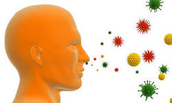 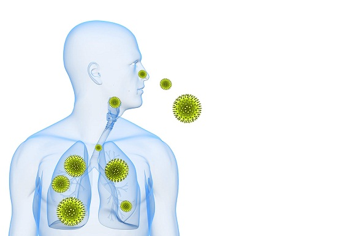- Проспективное исследование позволяет предположить, что в ближайшие несколько лет , уже половина населения планеты будет страдать различными аллергическими заболеваниями.
- Продолжится рост аллергических заболеваний.
- Растет число пациентов с высоким уровнем чувствительности к большинству аллергенов, в том числе особенно требуют внимания новые аллергены, профессиональные аллергены и аллергены с перекрестной реактивностью.
- Согласно прогнозам, будет отмечаться более тяжелое течение аллергических заболеваний и их частые обострения.
Изменить генетическую предрасположенность организма к аллергии пока не представляется возможным.
Причины роста аллергопатологии связаны с различными факторами:
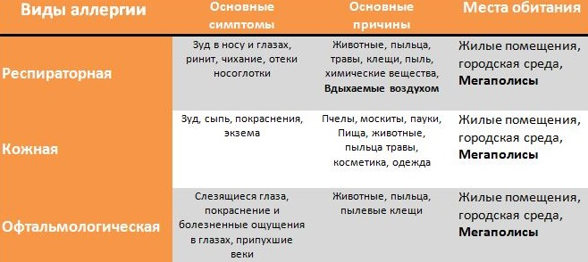Как это ни парадоксально, но именно стремление к западному устройству жизни привело современный социум к чуме 21 века. Городская жизнь в отличие от сельской является главной причиной развития аллергических заболеваний. Сельский житель с пеленок привыкает к обилию пыли и аллергенов. Городской житель испытывает похожее развитие со дня своего рождения, но в отличие от сельского жителя городской, вынужден, привыкать, к химическим веществам которые повсеместно его окружают. Если человек способен адаптироваться к органическому миру («живому»), и это называется эволюцией, то взаимодействие с химическими веществами приводит к мутации и деградации иммунной системы, так как она не способна распознавать и защищаться от антигенов (аллергены) современного городского быта.
С 1964 года, когда была установлена связь бытовой аллергии с сенсибилизацией к клещам домашней пыли, проблема не теряет своей актуальности. Более чем у 70% лиц, страдающих аллергией на домашнюю пыль, в среднем через 8 лет развивается бронхиальная астма. У детей с бронхиальной астмой, которой предшествовали симптомы аллергического ринита, в 80% случаев выявляется аллергия на домашнюю пыль. Аллергия – это специфическая повышенная чувствительность к антигенам (аллергенам) в результате неадекватной реакции иммунной системы.
Главной причиной этой проблемы является ухудшение качества воздуха в жилых помещениях.
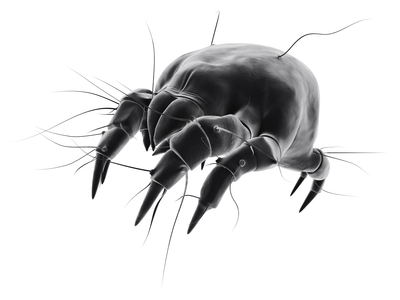Совершено, очевидно, что, прежде всего, необходимо заняться источниками загрязнения воздуха в помещении. И здесь особое внимание следует обратить на строительные материалы и внутреннее убранство помещений (мебель, ковры, декорация), персональные компьютеры.
Есть такие "загрязнители воздуха", которые, если их не удалить из помещения, никак не обнаруживают своего присутствия, но сильно сказываются на качестве жизни тех, кто пользуется этим помещением. Название этих "загрязнителей воздуха" – пылевые клещи или сапрофиты!
Улучшение качества воздуха в помещении в 2-7 раз, по сравнению с типичным уровнем в странах с холодным климатом, поведет к снижению риска заболевания астмой, повышению производительности труда служащих и успеваемости учащихся. Потенциальная польза для общества неоценима.
Промышленность, транспорт, производство вредных веществ загрязняют окружающую нас среду. Наша почва и грунтовые воды, наши реки и наши продукты питания, наш воздух – всё это давно находиться в небезупречном состоянии. Воздействие общего загрязнения окружающей среды на здоровье людей и животных становиться все более заметным.
Взрослые люди выросли в лучших экологических условиях, а наши дети дышат последствиями технического прогресса. В прошлом веке насчитывалось около 50-ти болезней дыхательных путей, на сегодняшний день известно более 1000.
Экология жилища
Мы часто говорим о неблагополучии окружающей среды, считая, что главная опасность исходит от загрязненного атмосферного воздуха, воды, почвы, продуктов питания. В жилище человек проводит 60-70% своего времени. Жилище – это не только укрытие от неблагоприятных воздействий природы, но и мощный фактор, воздействующий на человека и в значительной степени определяющий состояние его здоровья особенно в ночное время, когда мы спим.
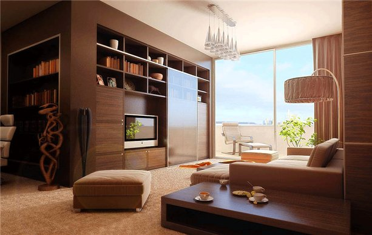Экологически чистое жилище – это, прежде всего воздух, которым мы дышим. Внутри любого жилья воздух грязнее того, что за окнами, в среднем в 3 - 4 раза.
Мы отравляем воздух продуктами собственного обмена веществ, газовыми плитами, на которых готовим пищу, каминами и печами, возле которых греемся. Мы отравляем воздух испарениями полимеров, лаков, красок, которыми отделываем стены, полы, двери наших домов. Все синтетические материалы - моющиеся обои, клеенки, пленки в той или иной степени выделяют какие-то вредные вещества. Мы отравляем свою среду обитания дезодорантами и искусственными освежителями воздуха. Кроме того, мы, что бы ни делали, усердно сжигаем кислород, а вместо него выделяем углекислый газ. Проводя основную часть жизни в домах, где отсутствуют природные механизмы очищения воздуха, мы вынуждены очищать его своими легкими, ведь процесс его загрязнения идет постоянно.
Знаете ли Вы о том, что в стандартной трехкомнатной квартире в год образуется до 40 кг пыли. Человек за сутки вдыхает до 12 тыс. литров воздуха, в одном литре которого содержится до 500 тыс. пылинок. Домашняя пыль – одна из самых частых причин аллергии. Согласно медицинской статистике, число страдающих ею граждан составляет 45-85% от общего количества всех вместе взятых аллергиков. Процесс пылеобразования происходит постоянно - вытираются ковровые покрытия, осыпается и вышаркивается краска, с улицы попадает пыль и выхлопные газы автомобилей, люди и домашние животные теряют волосы, кожный эпителий, перхоть и т.д. Пыль является транспортным средством для распространения бактерий и вирусов и способствует возникновению и распространению эпидемий. Все больше и больше людей подвергаются воздействию аллергических реакций. Что мы можем с этим поделать? Кажется, что практически ничего???
Пылевые клещи и аллергия
Любая домашняя пыль является комплексом аллергенов. В состав входят: библиотечная пыль (целлюлоза), фрагменты перьев, шерсти и перхоти животных, шерстяные волокна, волосы и эпидермис человека, споры плесневых грибов и бактерии, частицы насекомых (тараканов), хлопка, обивки для мебели и т.д. Все перечисленное может быть причиной аллергического заболевания, но "главным" из бытовых аллергенов является клещ домашней пыли.
К настоящему времени в домашней пыли найдено около 150 видов клещей (Dermatophagoides pteronyssinus и Dermatophagoides farinae — наиболее "аллергенные" представители). Их называют дерматофагоидными или пироглифидными клещами. Согласно одной из гипотез эти клещи первоначально обитали в гнездовьях птиц, а в последствии "переползли" в наши дома и квартиры. Клещи домашней пыли очень мелкие — между 0.1 и 0.5 мм — и не видны невооруженным глазом. В 1 грамме пыли может содержаться от сотни до нескольких тысяч клещей! Мелкие фрагменты клещей (от 10 до 40 микрон) и продукты их жизнедеятельности (особенно, фекальные частицы) обладают исключительной способностью вызывать аллергию.
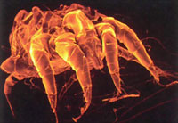 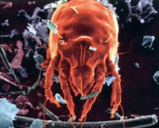 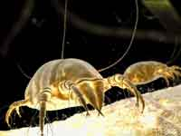Поднявшись в воздух, эти аллергены подолгу не оседают, а при вдыхании попадают к нам в дыхательные пути.
Домашние пылевые клещи живут около четырех месяцев. В течение этого времени клещ производит экскрементов в 200 раз больше собственного веса. И откладывает до 300 яиц. Теперь понятно, почему концентрация аллергенов в помещении быстро увеличивается за короткое время. Клещ является постоянным спутником человека на протяжении всей его жизни. Основным питанием для клеща являются омертвевшие клетки кожи. В год человек теряет до 2 кг кожи, основная масса которой остается на постельном белье. Поэтому основным местом обитания и размножения является постель, ковры с натуральным ворсом, места скопления пыли и т.д. В Вашей постели живут до 2 млн. клещей, это оптимальная среда для их обитания и размножения.
Проведенные исследования показали, что около 80% людей с бронхиальной астмой имеют повышенную чувствительность к клещам — важному фактору, как развития астмы, так и ее тяжести. Чувствительность к домашним пылевым клещам является, по-видимому, наиболее е показательным примером проблемы здоровья, вызванной изменениями во внутренней среде помещений. Ваш дом и постель это естественная среда его обитания на протяжении тысячелетий.
Невидимые враги — плесневые грибки
Плесневые грибки можно обнаружить в каждом жилье. Даже при регулярной и тщательной уборке постоянно образуются новые частички пыли и отшелушиваются чешуйки человеческой кожи. Клещи, в основном, питаются частичками кожи человека и животных, а также плесневыми грибками. Плесневые грибки являются еще одной причиной аллергии и вместе с клещами создают «взаимовыгодное товарищество». Грибки склеивают кератиновые кожные чешуйки, распад которых образует продукты, обеспечивающие питание домашних пылевых клещей.
Таким образом, плесневые грибки служат не только прямым питанием для клещей, но также и «средством пищеварения». Не сами клещи, а продукты их жизнедеятельности содержат аллергены, являющиеся причиной астмы, экземы и воспаления слизистой оболочки носоглотки.
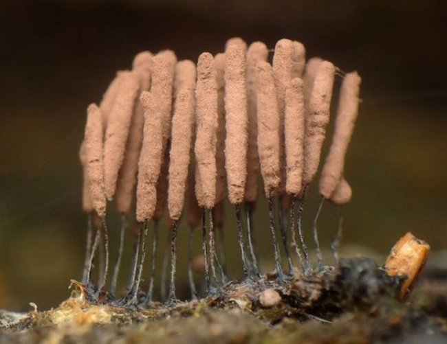Теплота и влажность способствует росту плесневых грибков. Aspergillus, показанный здесь (увеличение в 1000 раз) способен вызвать заболевание легких. Миллионы его пор, находящихся в окружающем воздухе, попадают в легкие при дыхании.
Обратная сторона общения с домашними животными!
В домах, где держат кошек или собак, обнаруживается от 1000 до 1000000 аллергена на грамм чистой пыли. Аллергенные свойства шерсти и перхоти, животных не зависят от породы или длины шерсти, — это относится и к собакам, и к кошкам.
Аллергены животных обладают очень высокой «летучестью»
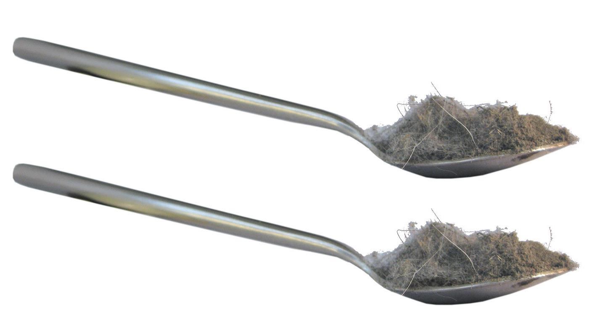Наиболее типичные реакции на аллергены животных развиваются после их воздействия на систему органов дыхания и конъюнктиву глаз. Они выражаются в виде симптомов аллергического ринита и конъюнктивита. Хотя в развитии бронхиальной астмы ведущую роль играют бытовые аллергены, и клещи домашней пыли, аллергены животных могут сыграть не менее существенную роль, особенно в детском возрасте.
Каждый день, в течение всей жизни, человек делает около 20000 вдохов и выдохов. Таким образом, каждый день в организм попадает примерно две полных ложки частиц пыли.
Поэтому, очень важно, каким воздухом мы дышим!
Система очистки дома
BORK V601
В одном приборе совмещены уникальные способности природы очищать, увлажнять и ионизировать воздух.
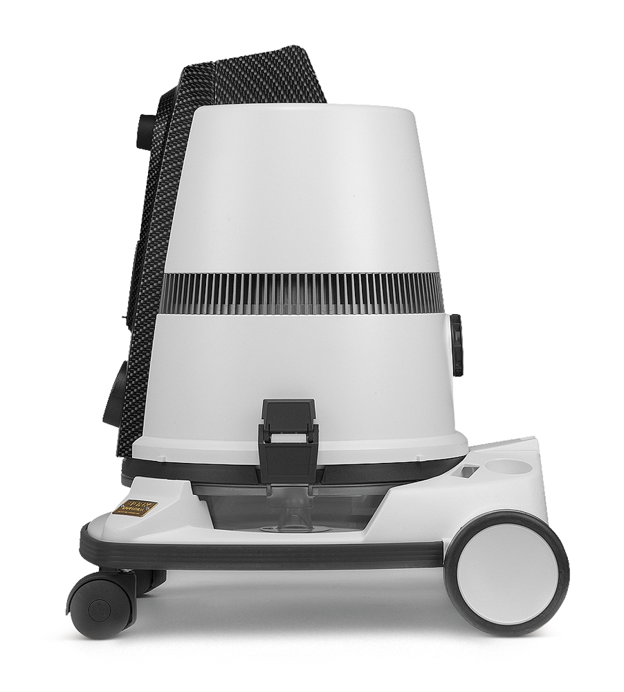 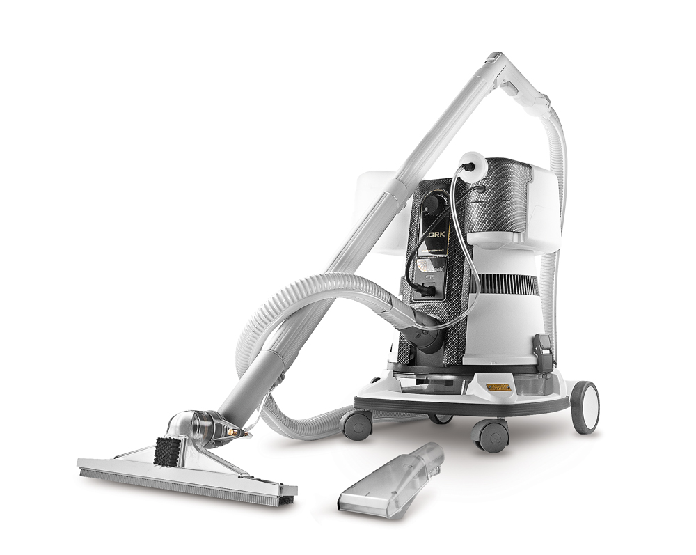 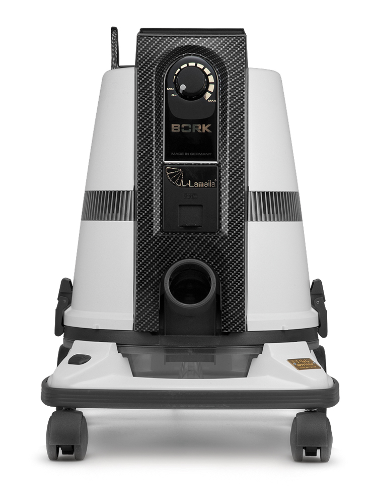BORK V601 - это высококачественная комплексная система очистки воздуха и помещения без расходных материалов.
Вам потребуется только вода.
Вода – это лучший фильтр
Природа использует воду (дождь, снег, туман) чтобы очистить воздух, которым мы дышим. В системе BORK V 601 в качестве фильтра используется барботажный принцип, высокотехнологичный сепаратор и вода - самая надежная ловушка для мусора, домашней пыли, аллергенов, пылевых клещей.
Мокрая пыль не летает!!! Вся домашняя пыль, попадая в бурлящую водную ловушку, никогда больше не вернется в Ваш дом! Абсорбционный метод позволяет удалять вредные газы из воздуха.
Как известно, жизнь зародилась в воде и по-прежнему остается тесно связанной с водой. Поэтому физико-химические свойства воды имеют фундаментальное значение для процессов жизнедеятельности.
Вода – это природный растворитель, который вбирает в себя все, с чем входит в контакт.
BORK V601– это воплощение Мечты, жить в окружении чистого и свежего воздуха.
Во время работы системы, Вы можете представить себя на берегу моря, океана вблизи прибоя и насладиться чистым, свежим и очень полезным воздухом. Как следствие, профилактика дыхательных путей.
Ароматерапия
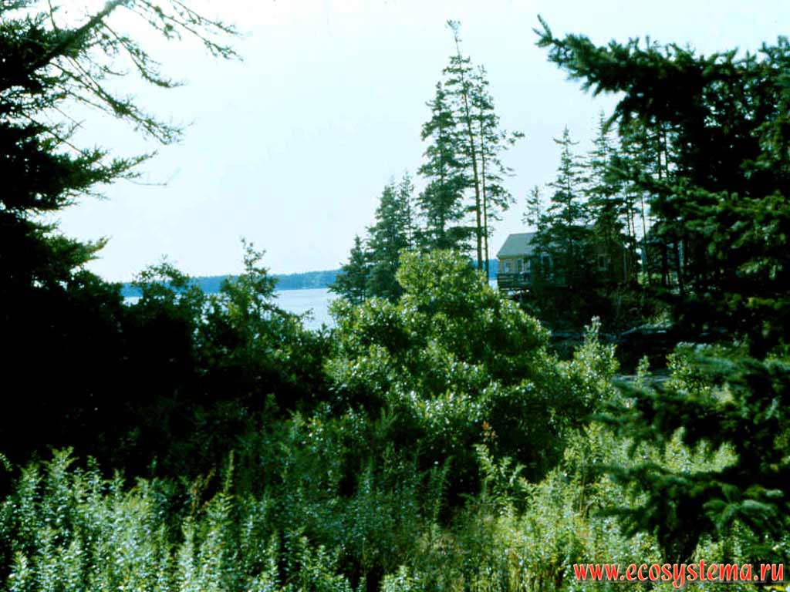Вечером, после работы, включив систему и добавив несколько капель ароматического масла, к примеру, хвойного. Вы почувствуете себя, как в чистом хвойном лесу. Польза огромная – снимает напряжение, расслабляет нервную систему, хотя бы на время Вы забываете о заботах и проблемах.
Ароматерапия
Древнейшая эстетическая методика воздействия природных ароматов (эфирных масел) на эмоции и здоровье через обонятельные центры. Древние философы считали, что эфирные субстанции (гормоны растений) были дарованы людям богами Олимпа в качестве элемента высочайшего Света (ЭФИР), пробуждающего любовь.
Нет на земле ни одного человека, который бы не применял ароматы. Совершенно естественно, не акцентируя свое внимание на этом факте, люди используют эфирные масла в пищу и в быту с рождения до самой смерти, не нуждаясь в специальном обучении или терминах. Ароматы - неотъемлемая часть жизни, как тепло, цвет и звук.
Ароматерапия — это метод лечения с применением натуральных эфирных масел, вводимых в организм через дыхательные пути, кожу и слизистые оболочки.
Цитрус (Zitrus)
В ароматерапии используется эфирное масло цитрусовых. эфирное масло цитрусовых стимулирует пищеварение, функции желчного пузыря, почек, мочевого пузыря, тонизирует сердце, обладает противолихорадочным и дезинфицирующим, противовоспалительным действием. Оказывает психологически согревающее, стимулирующее, балансирующее, релаксирующее, повышающее чувствительность действие и показано при нервозности, тревоге, печали, недостатке самообладания, потребности в тепле.
Эвко-мята (Eukal-Minz)
В ароматерапии используются эфирное масло цитрусовых, которые обладают уникальными свойствами.
Эфирное масло эвкалипта - это антисептическое и противовоспалительное масло. Эффективно при лечении гриппа, простуды, бронхита, синусита, астмы и других респираторных заболеваний, облегчает дыхание при насморке и гайморите.
Так же, укрепляет иммунную систему, обладает выраженной противовирусной активностью. Масло эвкалипта - это бактерицидное (распыление 2 % эмульсии эфирного масла убивает 70 % стафилококков в окружающем воздухе), антипаразитическое, заживляющее, предупреждает инфекционные и легочные заболевания, отпугивает москитов.
В ароматерапии используется эфирное масло мяты.
Оно имеет сильный свежий мятный аромат, и при смешивании его с другими маслами, используемыми совместно в ароматерапии (эвкалиптовым, лавандовым, розмариновым, цитрусовым), этот запах доминирует. Эфирное масло мяты - прекрасный анальгетик, снимает головные боли и мигрени. Применяется для лечения простудных заболеваний, различных воспалений верхних дыхательных путей, гриппа, насморка, бронхита. Яркий, освежающий запах мяты прекрасно стимулирует при умственных переутомлениях, смягчает состояние напряжения, освежает и бодрит.
Горный лес (Bergwald)
В ароматерапии используются хвойные масла, которые обладают свежим, смолистым, терпко-прохладным ароматом. Людям испокон веков были известны целебные свойства хвойных растений. На человека благотворно действует уже само их соседство: летучие фитонциды, содержащиеся в хвое, наполняют воздух волшебным ароматом, уничтожают болезнетворные микробы и поднимают настроение.
Распыление хвойного масла в помещениях повышает иммунную защиту организма, снимает воспалительные заболевания органов дыхания, облегчает мышечные боли при ревматизме, остеохондрозах, артрозах, невралгии, устраняет неприятные запахи, оставляя тонкий аромат хвойного леса.
Мотивация (Motivation)
Композиция из эфирных масел апельсина, травы бородача и ягод можжевельника.
Эта ароматная смесь действует возбуждающе. Используется для большей концентрации и умственной свежести.
В ароматерапии применяется эфирное масло апельсина.
Наряду с антисептическим действием, обладpает сильным успокаивающим эффектом. Помогает при бессоннице, депрессии, стрессах. Снижает давление, повышает концентрацию внимания. Очищает кровь, нормализует работу кишечника, углеводно-жировой обмен, предупреждает появление камней в желчном пузыре, способствует устранению целюлита. Улучшает цвет лица, эффективно для сухой кожи. Дезинфицирует полость рта.
В ароматерапии масло можжевельника
Масло можжевельника эффективно при простудных заболеваниях: ОРВИ, гриппе, аденовирусной инфекции. Оно способствует выведению токсинов.
В ароматерапии эфирное масло бородача называют маслом спокойствия, оно имеет сильное успокаивающее воздействие на нервную систему. Могут быть решены глубокие психологические проблемы, а ипохондрики почувствуют себя лучше, регулярно принимая масло.
Аэроионизация воздуха
Существуют временные, местные ионизаторы - такие как грозы, водопады, горные реки и прибой. В результате всех этих процессов, а также явлений биологической жизни в окружающей нас среде устанавливается естественная концентрация аэроионов.
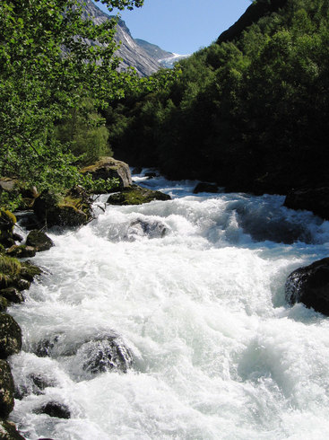Система очистки BORK V601 – это и водопад и горная река и прибой.
АЭРОИОН — любая заряженная аэрозольная или кластерная частица, взвешенная в воздухе, если ее средняя скорость относительно воздуха определяется главным образом электрическими силами. Аэроионы являются наиболее чувствительным физическим индикатором загрязненности воздуха и оказывают непосредственное воздействие на здоровье человека. Искусственно Аэроионы могут создаваться при распылении любого твердого или жидкого вещества, контактной зарядки аэрозольных частиц и др. Считается, что легкие отрицательные А., включающие кислород, положительно влияют на живой организм. Высокое содержание легких отрицательных Аэроионов наблюдается в чистом горном, морском, лесном, подземном воздухе. Наличие пыли и химических загрязнений резко (в десятки раз) уменьшает содержание легких отрицательных Аэроионов.
АЭРОИОНИЗАЦИЯ — процесс искусственной ионизации воздуха с помощью ионизаторов воздуха (аэроионизаторов). Осуществляется для компенсации дефицита или отсутствия полезных для здоровья легких отрицательно заряженных ионов в производственных, служебных, бытовых помещениях либо (в терапевтических целях) в лечебно-профилактических учреждениях.
Опыты показали: чем выше концентрация легких отрицательных аэроионов, тем чище воздух. Было установлено, что периоды снижения заболеваемости - легочными болезнями, в том числе и с обострениями, бронхиальной астмой, органов желудочно-кишечного тракта и ряда других, совпадают с периодами повышения концентрации легких ионов в атмосферном воздухе, и наоборот. Таким образом, отрицательные аэроионы оказывают стимулирующий эффект, положительные - подавляют иммунную систему.
Принцип работы системы очистки BORK V601
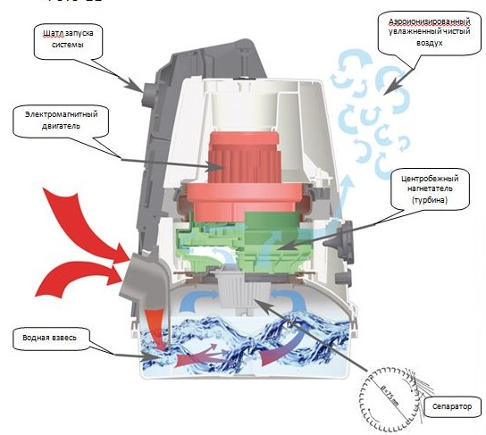- На первом этапе пыль задерживается в воде.
- На втором, за счёт центробежной силы, водная взвесь связывает мельчайшие пылевые частицы.
- В заключении, пыль вдавливается обратно в воду.
Функции системы
- Воздухоочиститель без расходных материалов.
- Ароматизация / ингаляция.
- Аэроионизация.
- Естественный, как в природе, увлажнитель воздуха.
- Пылесос с аквафильтром с постоянной мощностью всасывания (всегда высокое качество уборки).
- Вакуумная очистка и ароматизация подушек, перин, одеял и одежды.
- Функция работы на выдув (возможность удалить пыль из труднодоступных мест).
- Удаляет засоры в раковинах, ваннах и трубах.
- Сбор жидкости.
- Качественная уборка занавесок, штор, гобеленов, гардин.
- Новый Carbon Design
Комплектация BORK V601
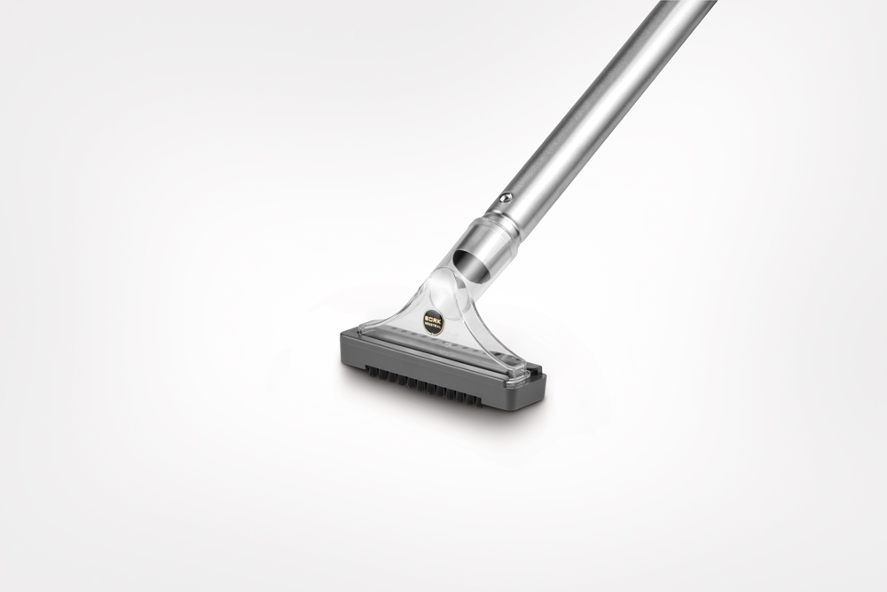 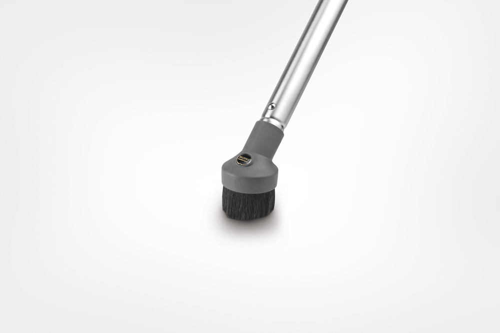 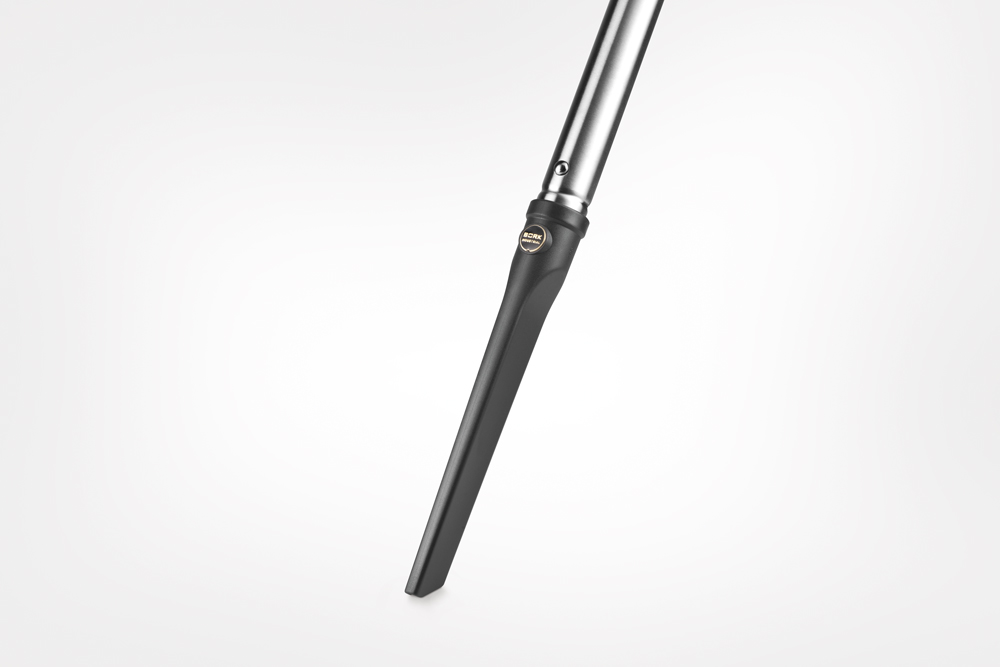 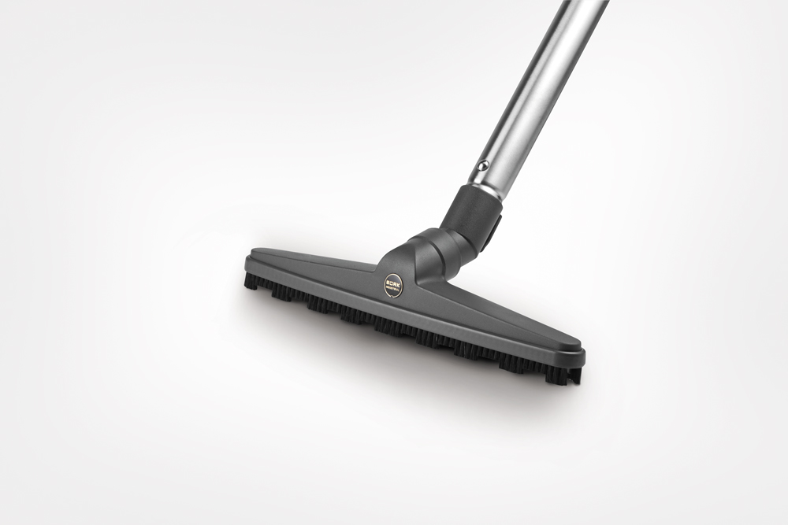 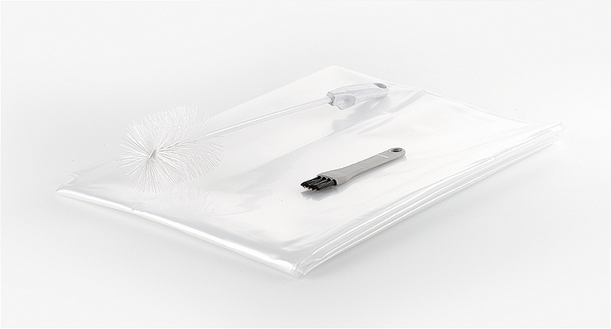- Насадка – комбинированная (пол/ковер)
- Насадка – для гладких покрытий (паркетная)
- Насадка – для деликатной уборки мягкой мебели (также для сбора жидкости)
- Насадка – для деликатной уборки корпусной мебели (для пробивания засоров)
- Насадка – для деликатной уборки (щелевая)
- Пластиковый пакет для вакуумизации + 2 щетки для обслуживания
- Телескопическая труба (стальная)
- Телескопическая труба с держателями для кабеля (стальная)
Дополнительные возможности

Комплект для влажной уборки BORK V6FS1
Электрощетка BORK AV601A
Технические характеристики:
Система очистки дома BORK V601
- Потребляемая мощность: 950 Вт/Макс. 1350 Вт.
- Турбореактивный сепаратор со скоростью работы: 6000 - 20000 об/мин
- Макс. производительность по воздухообмену: 2600 л/мин.
- Длина сетевого шнура: 7 метров
- Уровень шума: < 74 Дб
- Все трубы с фиксаторами, все винты в системе, вал двигателя выполнены из высококачественной нержавеющей стали V2a.
- Отключение двигателя при снятии резервуара для воды.
Электрическая щетка BORK V601A

- Потребляемая мощность: 100 Вт
- Дополнительный ремень
- 3-х позиционный переключатель
Моющий комплект BORK V6FS1
- Потребляемая мощность: 25 Вт
- Производительность: 35 л/час
- Давление насоса (помпы): 2,8 бар
- Объём резервуара для моющего раствора: 4 литра
Двигатель нового поколения
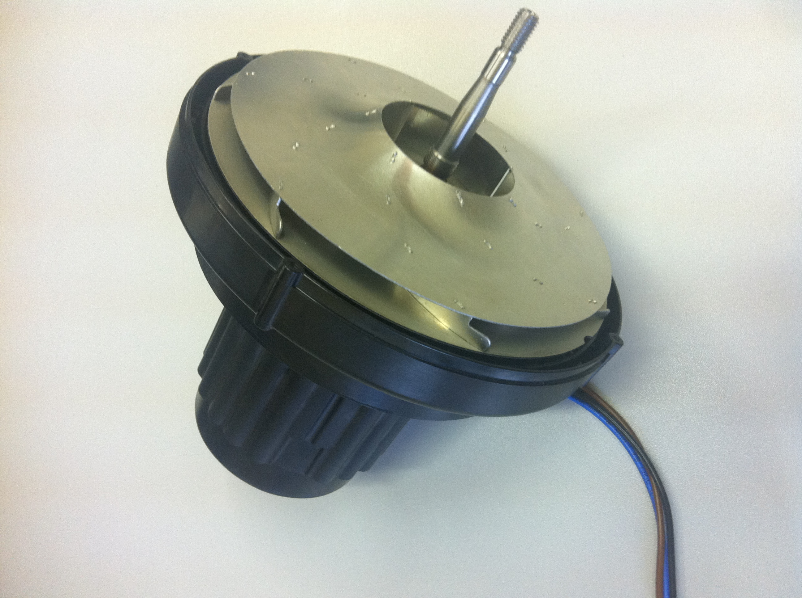 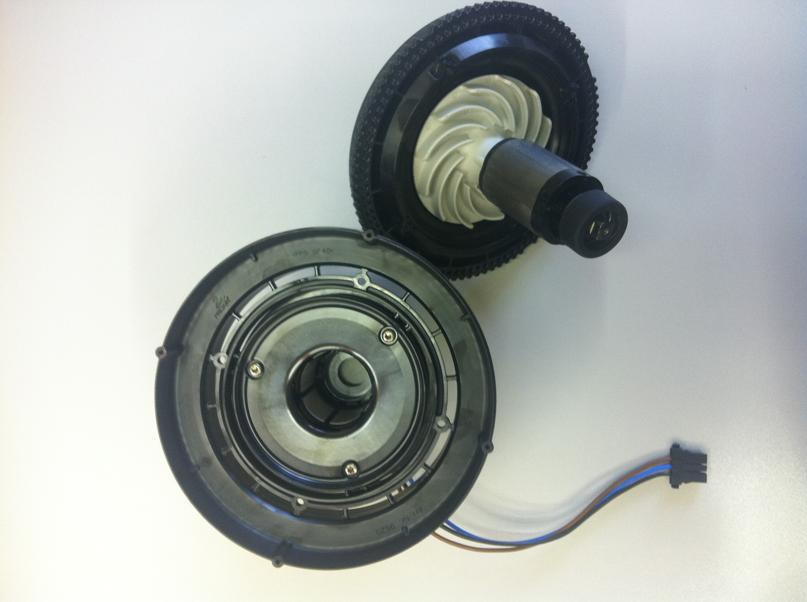- Ресурс двигателя не ограничен. Неизнашиваемый магнитный ротор
- Ресурс работы подшипников в двигателе 6000 часов (50 – 60 лет). Для сведения: ресурс стандартных двигателей в пылесосах составляет 600 – 700 часов.
- Звукопоглощающий элемент обеспечивает низкий уровень шума < 74 Дб